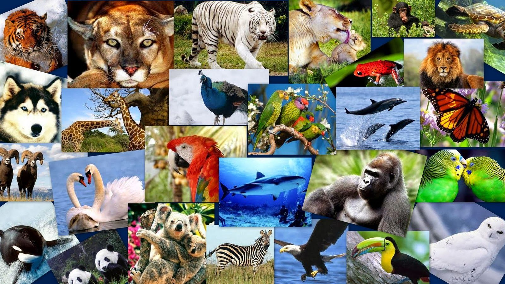

¿Cómo podemos ayudar a evitar la extinción de los animales?

Para evítar la extinción de los animales podemos ayudar, por medio de:
- Evitar la deforestación
- Evitar la caza de animales
- Reciclar y reutilizar desperdicios
- Plantar arboles
- Evitar contaminar los recursos naturales
- Crear fundaciones para los animales en peligro de extinción
- Crear una pagina web o red social para concientízar a las personas
Fundaciones que se dedican a ayudar animales en peligro de extinción:
Unión Internacional para la Conservación de la Naturaleza(UICN)
 Para conocer más sobre UICN:Haz click aquí
Para conocer más sobre UICN:Haz click aquí
World Wildlife Fund for Nature(WWF)
World Association of Zoos and Aquariums(WAZA)
Asociación de Zoológicos, Criaderos y Acuarios de México AC(AZCARM)